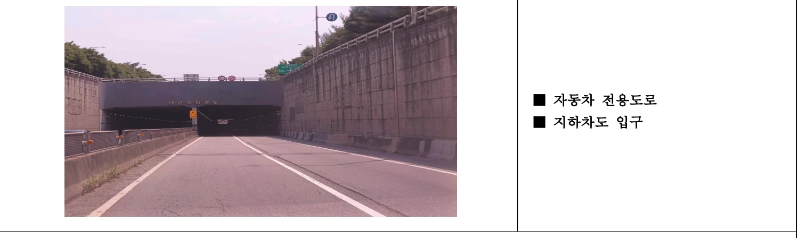

736. Which of the following are the safest ways to drive in the given situation? (Select TWO)

- ①You can switch to the second lane in sections marked with solid white lines before entering the underpass.
- ②In an underpass, drive with the headlights on at a safe speed while paying attention to the road ahead.
- ③You can overtake slower vehicles in the underpass, even in sections marked with solid white lines.
- ④Keep a safe distance from the vehicle ahead in an underpass.
- ⑤If you enter an automobile road by mistake, reverse safely and proceed.
Show answer
Answer
② In an underpass, drive with the headlights on at a safe speed while paying attention to the road ahead.
④ Keep a safe distance from the vehicle ahead in an underpass.
Reference
The vehicle's direction must not be changed in places where safety signs are installed and direction changes are specifically prohibited. You can change course in the white dotted line section, but you must not change course in the solid white line section. It is safe to turn on the lights on the underpass even during the day, and proceed while maintaining a safe distance from the car in front. Reversing on automobile-only roads is prohibited.
Reference text is a machine translation for study.